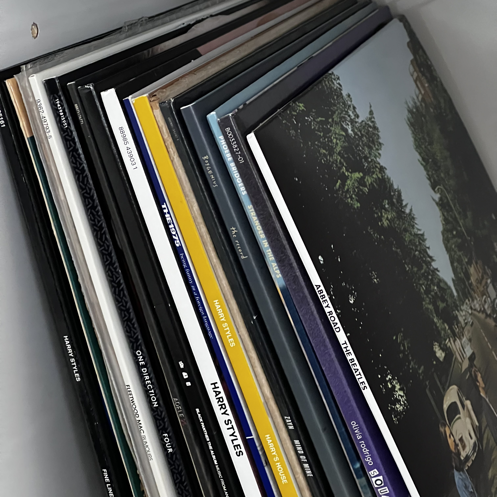

Home
Welcome to my portfolio! Hi, my name is Aakriti and I am a computer science undergraduate student with a passion for topics like artificial intelligence, machine learning, software engineering, and data analytics. I have worked on projects involving technologies like deep learning and have research experience from an NSF internship focused on adversarial machine learning. My passion lies in using technology for social good and am drawn to leveraging my skills to cultivate a better society.
Education
I will be graduating with honors from Rollins College (Winter Park, FL) with my Bachelor's degree, double majoring in Computer Science and Business Management. Through courses like Data Structures and Algorithms, Artificial Intelligence, Database Design, and Software Engineering, I gained in-depth knowledge of coding languages like Python, Java, C++, C, as well as frameworks like TensorFlow and Flask. My interdisciplinary studies allowed me to boost both my technical skills while building business acumen.
Research
-
Adversarial Machine Learning in Autonomous Vehicles
- From the summer of 2023, this National Science Foundation-sponsored research focused on evaluating the robustness of autonomous vehicle systems against adversarial machine learning attacks. I experimented with and simulated various models to determine how to enhance the systems, feedback mechanisms, and interfaces between vehicles and human drivers. This project aligns with my interests in machine learning and responsible AI development. Working under an NSF grant also provided me with an incredibly valuable research experience and reaffirmed my goal of pursuing graduate school.
-
Evaluating AI Sentiment Analysis
- My honors thesis project (poster and paper), started in January of 2023, leverages large language models to enhance the sentiment analysis of textual data. By manually coding interview phrases from the nonprofit organization Crave, my research group and I formed a foundation for the comparative analysis against outputs from different AI models. This allowed us to evaluate the specific sentiment analysis capabilities of various natural language processing systems, while also gaining valuable insights about Crave that could be used to help their organization.
Projects
-
‘ASLearning’: Sign Language Translation App
- This group project was created to bridge the communication gap between hearing-impaired individuals and English speakers. It utilizes TensorFlow, Flutter, and Firebase to develop a mobile app that implements deep learning and image recognition to facilitate communication. The goal is to create an accessible and inclusive tool for those with hearing impairments to more easily understand English speech. This was such an enjoyable project to work on because it allowed me to gain skills in machine learning, while simultaneously creating technology that has a meaningful social impact.
-
'voteSmart': Political Candidate Matching Web App
- This project was aimed to help the users of this application (targeted toward U.S. citizens) to easily connect with political candidates that appropriately fit their personal views. The user takes a political alignment quiz that places them on the political scale. From here the user is provided with information about the political candidates in their area, with emphasis on the candidates that their views align with. I enjoyed building this application because it allowed me to further improve my skills with Python and SQL, as well as explore the Flask framework.
-
Crochet Pattern Generator Application
- This application generates a visual crochet pattern based on the type of stitch that was chosen. I developed the frontend interface using basic HTML and CSS so that this could be accessed by my friends as well. The user inputs either the predetermined size of their item, or chooses between small, medium, large, or extra-large. Then the user pick whether they will be employing single stitches or double stitches and then the number of stitches and an image of the pattern is printed. For the next version of this application, I plan on incorporating neural networks and image inputs so that the application can produce a pattern based on the image that the user provides.
Interests & Hobbies
-
Crocheting
- I love turning yarn into things like blankets and things I can wear (sweaters, tops, and shrugs).
- Using my free time while keeping my mind busy with following intricate crochet patterns and coming up with my own designs is something I do to relax.
-
Baking
- Baking cakes, cookies, and breads is another activity that I find incredibly fun to do in my free time.
- I love baking cakes for my loved ones on special occasions.
- I sometimes follow recipes and other times I will mix recipes together to create something unique.
-

-

-
Film Photography
- My favorite hobby is film photography. I like to capturing nature, cityscapes, people, and other scenes with by 35mm point-and-shoot cameras.
- I later use my friend's own darkroom to develop the photos by hand.
- Experimenting with different ways to processing and develop the photos is half of the fun.
-
Vinyl Collection
- I also have a growing vinyl collection with some of my favorite genres of music: R&B, rock, indie, and pop.
- Digging around at record stores on Sunday mornings to discover new music is something I really enjoy.
- Oftentimes, I will ting on a record and listen to whole albums while studying. 


Experience
-
NSF Research Internship
- Focused on adversarial ML approaches for self-driving cars.
- Simulated attacks against autonomous vehicle systems to gauge security vulnerabilities.
- Analyzed impact of perturbations/input manipulation on ML model behavior.
- Researched techniques to improve model robustness against potential exploits.
-
iD Tech Camps Instructor
- Instructed and mentored students in various technology-related subjects.
- Facilitated hands-on learning experiences, coding projects, and team activities.
- Provided guidance and support to students with varying skill levels.
-
Autism in Motion, Volunteer
- Volunteering to help facilitate the integration and physical activity engagement of children with autism to enhance their well-being and inclusion in the community.
-
One for the World, President
- Introduced and implemented One for the World, an organization that promotes effective altruism and charitable giving.
- Strategized plans to gain members and have as many as possible take the 1% pledge.
-
NSF Research Internship
- Focused on adversarial ML approaches for self-driving cars.
- Simulated attacks against autonomous vehicle systems to gauge security vulnerabilities.
- Analyzed impact of perturbations/input manipulation on ML model behavior.
- Researched techniques to improve model robustness against potential exploits.
Skills
- Programming: Python, SQL, Java, JavaScript, R, Assembly (ARM), C, C++, XML, Dart, C#, LaTeX
- Frameworks: Node.js, pandas, Angular.js, Numpy, React, Flask, TensorFlow
- Other Skills: Validation and Processing of Data, Jupyter Notebooks, MATLAB, Tableau, CSS and HTML, AWS (cloud computing), Teamwork and Collaboration, Critical Thinking, Web and Mobile App Development, CPU Architecture
- Languages: English – Native, Hindi – Native, Spanish – Intermediate, and German – Beginner
Contact